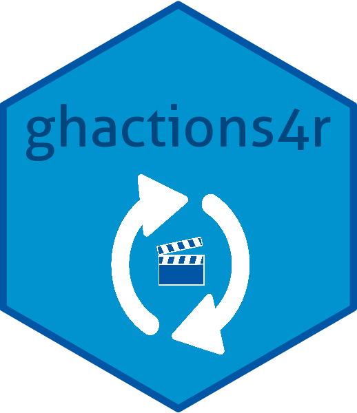

What is in ghactions4r?
This repo contains a collection of reusable workflows found helpful for R packages. In addition, {ghactions4r} contains helper functions for setting up the workflows in a separate R package Github repository.
How do I use these workflows in my R package?
First, install the ghactions4r R package:
install.packages("remotes")
remotes::install_github("nmfs-fish-tools/ghactions4r")use_*() functions in the ghactions4r package work like use_*() functions in the usethis package.
Open the cloned repository of an R package and run the function of choice. These functions set up the files needed to use the reproducible workflows in ghactions4r.
- To run R CMD check using linux (R release and R development), mac (R release), and windows (R release):
ghactions4r::use_r_cmd_check()- To calculate code coverage using
covr::codecov():
ghactions4r::use_calc_coverage()(a codecov.io account is also necessary to view the coverage results)
- To update documentation using
devtools::document():
ghactions4r::use_update_roxygen_docs()- To update R code styling using
styler::style_pkg():
ghactions4r::use_style_r_code()- To update documentation and code styling (with the option of running
ghactions4r::rm_dollar_sign()):
ghactions4r::use_doc_and_style_r(use_rm_dollar_sign = FALSE)- To automatically update pkgdown that has already been set up:
ghactions4r::use_pkgdown()Commit and push the files generated up to github, making the github actions available for the repository of the R package.
The templates these functions generate can also be viewed for reference.
The Github action I added to my repository failed. What should I do?
Please submit an issue or email kathryn.doering@noaa.gov. Bugs are always possible, as this repository is still experimental. Reporting issues will make ghactions4r better for all users!
Disclaimer
“The United States Department of Commerce (DOC) GitHub project code is provided on an ‘as is’ basis and the user assumes responsibility for its use. DOC has relinquished control of the information and no longer has responsibility to protect the integrity, confidentiality, or availability of the information. Any claims against the Department of Commerce stemming from the use of its GitHub project will be governed by all applicable Federal law. Any reference to specific commercial products, processes, or services by service mark, trademark, manufacturer, or otherwise, does not constitute or imply their endorsement, recommendation or favoring by the Department of Commerce. The Department of Commerce seal and logo, or the seal and logo of a DOC bureau, shall not be used in any manner to imply endorsement of any commercial product or activity by DOC or the United States Government.”

U.S. Department of Commerce | National Oceanographic and Atmospheric Administration | NOAA Fisheries